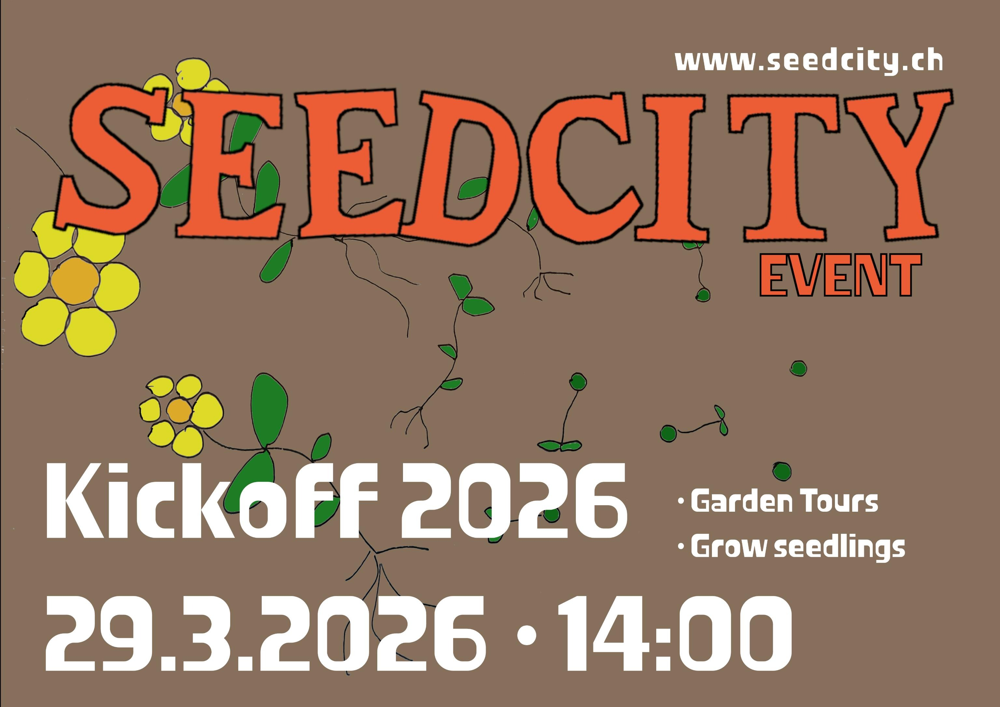

On March 26 at 7:00 pm, the Permakulturgarten Schweibenalp visits Campus Hönggerberg. Presentation and discussion (approx. 1.5 h) with practical insights into garden design, soil, medicinal plants and biodiversity. Open to all students, no prior knowledge needed. Free event, voluntary donation for the project. Limited number of participants, registration required: seedcity@ethz.ch.

Have you been thinking about being outside more? Getting in touch with nature? Meeting (arguably) cool new people? This is THE time to join the garden, since it is the beginning of the season! We will be giving out garden tours and planting seedlings and mending the fence and perhaps eating snacks and trim the hedges and hang up birdhouses and do weeding and prepare the fields and ...
On April 26, 10:00-16:00 Peter Keiser will give us an introduction to cultivating mushrooms. In his workshop we'll learn how to grow them in the garden, how to care for them and we'll prepare wood with different mushroom varieties. For this workshop led by a professional we would collect a fee: CHF 20 for members, CHF 30 for students and CHF 50 for external participants. As a bonus we'll provide lunch at the garden. Limited number of participants, registration required: https://nuudel.digitalcourage.de/4tudzRfAUjLwSLc9